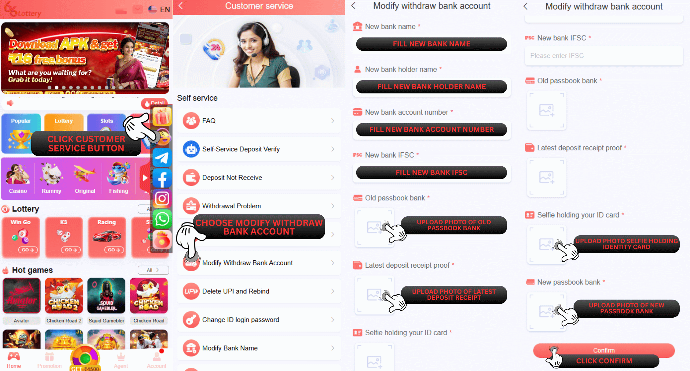
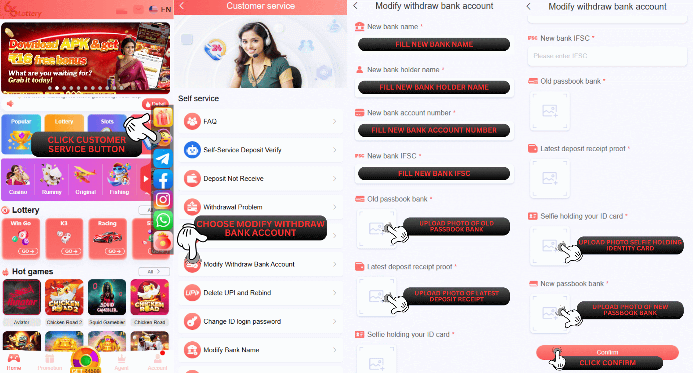
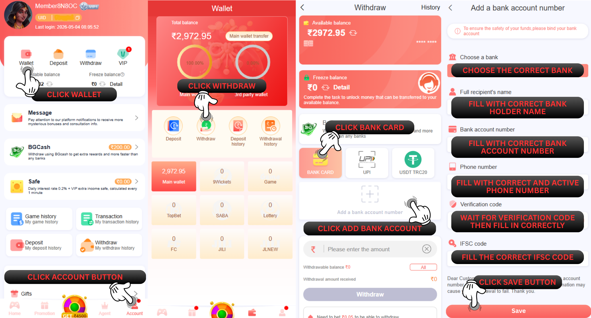

बैंक खाता हटाएं
प्रश्न: मैं 66 Lottery पर बैंक खाता संख्या को कैसे संशोधित या परिवर्तित कर सकता हूँ?
उत्तर: हमारा ग्राहक सहायता आपके बैंक खाते की जानकारी को संशोधित या संपादित करने में सक्षम नहीं है, लेकिन हम केवल सदस्य को उनके आईडी खाते में बंधे बैंक खाते को हटाने में सहायता कर सकते हैं और हटाने के बाद पूरा सदस्य एक नया बैंक कार्ड जोड़ सकेगा जिसका उपयोग वे भविष्य में निकासी पते के लिए करना चाहते हैं।
प्रश्न: स्वयं-सेवा केंद्र 66 Lottery पर बैंक खाता हटाने का उद्देश्य क्या है?
उत्तर: यह बैंक खाता हटाने का उद्देश्य उन सदस्यों के लिए है जो गलत बैंक जानकारी प्रदान करते हैं जैसे कि गलत 1-2 अंकों का बैंक खाता नंबर या वे सदस्य जो अपने पिछले बंधे हुए बैंक को नए बैंक में बदलना चाहते हैं।
प्रश्न: मैं स्वयं-सेवा केंद्र 66 Lottery पर बैंक खाता हटाने के बारे में समस्या कैसे प्रस्तुत कर सकता हूँ?
उत्तर: स्वयं सेवा केंद्र 66 Lottery पर बैंक खाता हटाने के लिए, कृपया इस चरण का पालन करें
1. आपको इस लिंक https://www.66lottery.vip/ का उपयोग करना होगा
2. लिंक दर्ज करने के बाद अधिसूचना बंद करें
3. समस्या का चयन करें और “बैंक खाता हटाएं” चुनें
4. अपना 66 Lottery आईडी खाता भरें
5. पहचान पत्र स्पष्ट और विवरण पकड़े हुए सेल्फी की फोटो संलग्न करें
6. अपनी पासबुक बैंक / बैंक स्टेटमेंट स्पष्ट और विवरण की फोटो संलग्न करें
7. हाल ही में जमा रसीद प्रमाण की फोटो संलग्न करें
8. समस्या सबमिट करें

प्रश्न: बैंक खाता हटाने की प्रक्रिया पूरी होने के बाद मुझे क्या करना होगा?
उत्तर: बैंक खाता हटाने की प्रक्रिया पूरी होने के बाद, सदस्य एक नया बैंक खाता जोड़ सकते हैं या अपने आईडी खाते में पहले से मौजूद बैंक जानकारी में सुधार कर सकते हैं। इसके लिए वे “निकासी” पृष्ठ पर जा सकते हैं और नीचे दिए गए चरणों का पालन कर सकते हैं:
1. बैंक खाता जोड़ें पर क्लिक करें
2. वह बैंक चुनें जिसमें आप पंजीकरण करना चाहते हैं
3. सभी आवश्यक जानकारी सही ढंग से भरें (आपका पूरा नाम, बैंक खाता संख्या, सक्रिय फ़ोन नंबर, ईमेल पता और IFSC कोड)
4. सहेजें पर क्लिक करें और SMS सत्यापन मेनू दिखाई देगा
5. भेजें बटन पर क्लिक करें
6. सही OTP कोड भरें
7. पुष्टि बटन जोड़ें पर क्लिक करें

प्रश्न: मुझे किस तरह से सेल्फी लेने की आवश्यकता है, जिसमें डेटा की आवश्यकता है?
उत्तर: ठीक है, उदाहरण के लिए कृपया हमारे द्वारा दी गई तस्वीर को लाइक करें

प्रश्न: कौन सा वैध पहचान पत्र है जिसका उपयोग हम आवश्यकता के लिए कर सकते हैं या दिखा सकते हैं?
उत्तर: वैध पहचान पत्र के लिए आप आधार कार्ड / पैन कार्ड / ड्राइविंग लाइसेंस कार्ड का उपयोग कर सकते हैं


प्रश्न: बैंक के लिए मुझे क्या प्रदान करना होगा?
उत्तर: बैंक में आपको पासबुक बैंक / बैंक स्टेटमेंट का स्क्रीनशॉट संलग्न करना होगा जिसमें बैंक धारक का नाम, बैंक का नाम, बैंक खाता संख्या, IFSC कोड स्पष्ट रूप से दिखाई देगा और विवरण दिया जाएगा।

स्थिति समस्या
प्रश्न: मैं स्वयं-सेवा केंद्र 66 Lottery पर बैंक खाता हटाने की अपनी स्थिति समस्या की जाँच कैसे करूँ?
उत्तर: आप समस्या की स्थिति जाँचें बटन दबाकर स्थिति समस्या की जाँच कर सकते हैं, फिर अपना 66 Lottery ID खाता भरें और बैंक खाता हटाने की समस्या का चयन करें, अंत में खोज करने के लिए क्लिक करें और यह आपकी समस्या की स्थिति दिखाएगा
सफल स्थिति
प्रश्न: मैं पहले से ही जाँच कर रहा हूँ और यहाँ स्थिति पहले से ही सफल है और एक नोट है पास - सफलता "बैंक डेटा हटा दिया गया है, कृपया अपना नया बैंक जोड़ें" इसका क्या मतलब है?
उत्तर: इसका मतलब है कि 66 Lottery खाते पर निकासी के लिए आपका बैंक डेटा पहले से ही सफलतापूर्वक हटा दिया गया है और आप अपने ID खाते में एक नया बैंक कार्ड जोड़ने में सक्षम हैं।
प्रश्न: मैं पहले से ही जाँच कर रहा हूँ और यहाँ स्थिति पहले से ही सफल है और एक नोट पास - सफलता है "बैंक डेटा हटा दिया गया है, कृपया सही बैंक को फिर से बाँधें" इसका क्या मतलब है?
उत्तर: इसका मतलब है कि 66 Lottery खाते पर निकासी के लिए आपका बैंक डेटा पहले से ही सफलतापूर्वक हटा दिया गया है और आप अपने आईडी खाते में सही बैंक जानकारी को फिर से बाँधने में सक्षम हैं।
अस्वीकार स्थिति
प्रश्न: अस्वीकार स्थिति के बारे में क्या, मुझे यह जानना है कि क्या मेरा बैंक खाता हटाने का मुद्दा 66 Lottery डेटा विभाग द्वारा अस्वीकार कर दिया गया है?
उत्तर: ठीक है, निश्चिंत रहें, हम आपको यह समझाने में मदद करेंगे कि कुछ नोट अस्वीकृति हैं, जिनके बारे में आपको जानना आवश्यक है, हम इस पर नीचे स्पष्टीकरण देंगे:
1. अस्वीकार करें "आवश्यकता डेटा गलत है, सही डेटा पुनः सबमिट करें": इसका मतलब है कि आपके द्वारा प्रदान की गई आवश्यकता सही नहीं है, लेकिन यदि 66 Lottery डेटा विभाग को पता चलता है कि कोई विशिष्ट डेटा स्पष्ट और विस्तृत नहीं दिख रहा है, तो नोट अधिक विशिष्ट होंगे और आपको सभी को स्पष्ट और विस्तृत रूप से पुनः सबमिट करना होगा
उदाहरण के लिए: आपके द्वारा प्रदान किया गया डेटा गलत है, कृपया पहचान पत्र को स्पष्ट और विस्तृत रूप से पुनः सबमिट करें: इसका मतलब है कि आपके पहचान पत्र को पकड़े रहने के दौरान नहीं देखा जा सकता है और विस्तृत रूप से नहीं
2. अस्वीकार करें "सभी आवश्यक डेटा स्पष्ट और विस्तृत रूप से प्रदान करें": इसका मतलब है कि सभी डेटा आवश्यकताएँ धुंधली हैं या स्पष्ट रूप से नहीं दिखाई दे रही हैं, कृपया सभी को स्पष्ट और विस्तृत रूप से पुनः सबमिट करें
3. अस्वीकार करें "आईडी खाता गलत है, सही आईडी के साथ पुनः सबमिट करें": इसका मतलब है कि आपका 66 Lottery आईडी खाता बशर्ते कि उसमें आपके द्वारा प्रदान की गई आवश्यकता के समान डेटा न हो और आपको आईडी खाते की फिर से जाँच करनी चाहिए और फिर सही आईडी खाते 66 Lottery के साथ पुनः सबमिट करना चाहिए